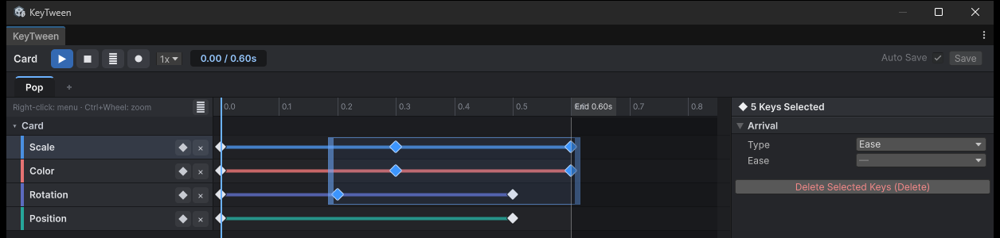
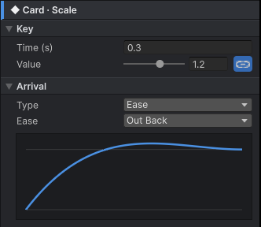

Editing Keys
A key is the value of a track at one point in time. You add and move keys on the timeline, and edit their values and arrival in the key inspector.
Selecting and Moving Keys
- Click a key to select it.
- Shift-click or Ctrl-click (Cmd-click on Mac) to add to the selection.
- Drag on empty space in the key area to select the keys the box touches, across tracks. You can start on a track's lane, on the event and child call lanes at the top, or in the empty space below the last track. Hold Shift or Ctrl while dragging to add to the selection.
- Drag one of the selected keys to move all of them by the same time. One Ctrl+Z undoes it.
- When two or more keys at different times are selected, a box spans them. Drag its right handle to stretch or shrink the keys around the left end, or its left handle to do it around the right end; the spacing between the keys scales evenly. A handle stops before the other end, so the keys keep their order. One Ctrl+Z undoes it.

Keys move in 0.01 s steps and never go below 0 s.
Adding and Deleting Keys
Add a key in any of these ways:
- Double-click an empty part of a row. The key gets the interpolated value at that time.
- Click ◆ on the track header. The key is added at the playhead.
- Right-click and choose Add Key Here.
Every track has a key at 0 s. If you add a key to a track that has no 0 s key, the 0 s key is created first.
To delete keys, press Delete or Backspace, or right-click and choose Delete Selected Keys.
Copying and Pasting Keys
- Select keys and press Ctrl+C (Cmd+C on Mac). They can be on several tracks.
- Put the playhead where the keys should go.
- Press Ctrl+V (Cmd+V on Mac). Copy Selected Keys and Paste Keys at Playhead in the context menu do the same.
- The earliest key lands on the playhead and the spacing between the keys stays the same. Values, arrival and curves are copied too.
- Keys go on the track of the same object and kind as the copied ones. Pasted into another state without that track, the track is created.
- Pasted into the KeyTween of another prefab, keys go on the object at the same path from the root. Keys whose object is not there are skipped.
- The playhead does not go past the end of the state. To paste after the end, right-click there and choose Paste Keys Here.
- A key already at a pasted time is replaced. The pasted keys are selected, so you can drag them right away.
Navigating the Timeline
| Action | How |
|---|---|
| Move the playhead | Click or drag on the ruler |
| Zoom | The wheel over the ruler, or Ctrl+wheel or Alt+wheel over the rows |
| Pan | Shift+wheel, a horizontal wheel, or a middle-button drag |
| Frame all | F or ⤢ |
| Collapse | Click an object row |
- Zooming is centered on the pointer.
- When an object row is collapsed, the keys under it are summarized as small diamonds.
- The ruler shows where the state ends (
End 0.80s), and everything after that point is shaded dark.
Key Inspector
When you select a key, the inspector shows a Key section followed by an Arrival section. Every key uses the same layout.

- In the Key section, fields that do not apply are not hidden. They are disabled and show the reason.
- The Arrival section shows only the fields for the chosen Type.
Setting a Key's Value
In the Key section, set the key's Time (s) and value. The value field is labeled by what the value means, as one of the following:
ValueValue (rest +)Value (press point +)Value (× own size)Strength(for Punch and Shake)
How you edit the value depends on its kind:
- Scale is edited with one linked slider (0 to 2, or −1 to 1 on a Relative To Rest track). A button switches to per-axis editing.
- Colors use a color field.
- Active uses a checkbox.
Values that are decided when playback starts are disabled. For example, the first key of a track whose Start is Current Value is disabled.
Setting the Arrival
In the Arrival section, choose a Type and set the fields for that Type. A curve graph is shown as well.
| Type | Fields |
|---|---|
| Ease | Ease |
| Punch, Shake | Ease, Frequency, Damping |
| Curve | Animation Curve |
- Arrival is disabled on the first key, since no segment arrives at it.
- With several keys selected, you can change Arrival for all of them at once.
For how each Type behaves, see Arrival.